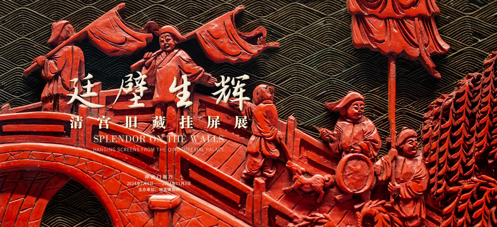

“廷壁生辉——清宫旧藏挂屏展”，由故宫博物院主办，香港赛马会全力支持，公益慈善研究院独家捐助，于2024年7月6日至11月3日在神武门城楼展厅举办。
挂屏属于屏风中的一种，主要安设于室内墙面之上，起到装饰与点缀立面空间的作用。清代挂屏的制作手法与艺术水准达到了前所未有的高峰，曾广泛应用于宫廷的大小殿阁之内。故宫博物院现有清宫旧藏挂屏九百余件，是数量最多的一类屏风，其在当时室内陈设中的重要性可见一斑。这些挂屏精美华丽，细节丰富，凝聚了清代手工艺制作技术的精华。当年常悬壁上，虽经岁月浸染，却难掩光辉，今日乃得与大众同赏。
